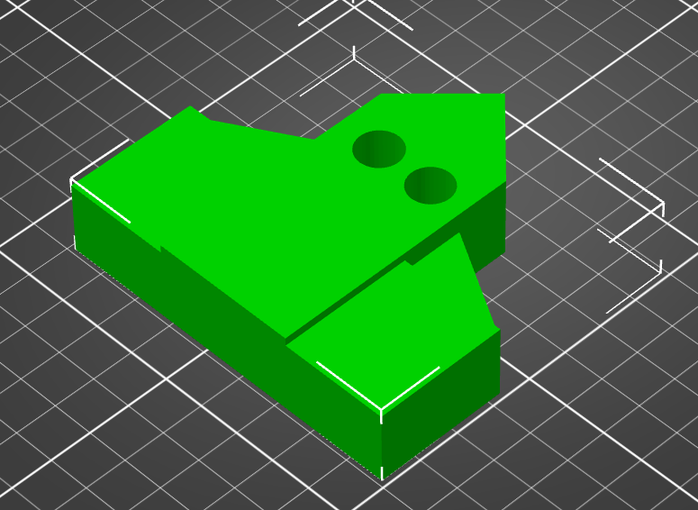
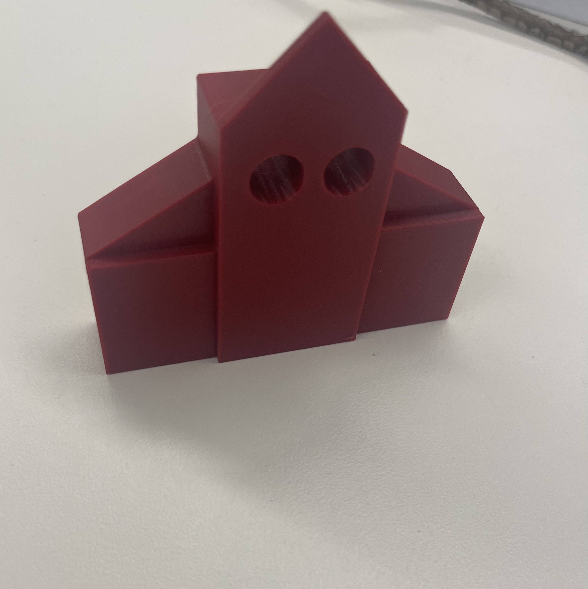
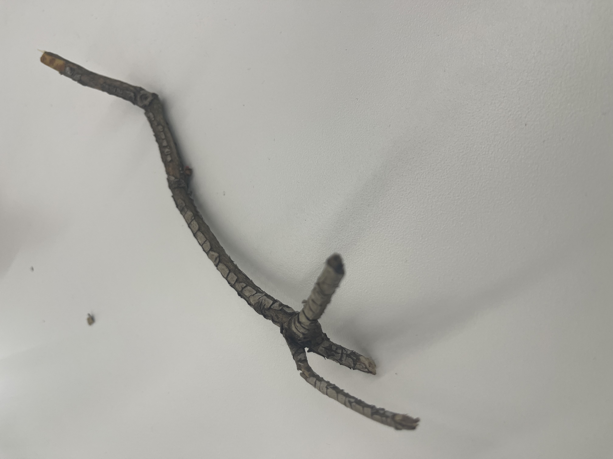

Design and print something that cannot be made easily through subtractive methods. Include a Fusion file (eg. .f3z), STL of your object, and sliced gcode in your documentation.
This is how you create a link to download a file.
This is a house I designed on fusion, it was really basic doing this part of the assigment. I simply designed some boxes with specific dimensions and added some triangles oln fusion and then passed on to PrusaSlicer and 3D printed in 45 minutes. It's easier then laser cutting because it is straight forward.


This is my 3D scan of a piece of tree. I took 269 fotos, but my phone could not proccess all that information, it over heated. I tried doing a scan of a weard shaped square, but it was not capable of scanng because it was 100% white. Now I know that it not only need texture, but different colors and sent all those fotos to my laptop, so it can proccess the information.

Materials for final project: " The idea is a brass valve cap that will be redesigned to detect when the gas inside of the LGP cylinder gets empty. On the moment that is getting empty, it will send a signal to the company that sells the LGP cylinder, serving as a product that will provide information about all the customers that have an empty LGP cylinder before the costumer notices. The adapter will be placed between the LGP cylinder and the brass valve assembly." List: "Brass adapter housing, pressure sensor, ESP32 XIAO microcontroller, rechargeable lithium battery, battery management module, 3.3 V voltage regulator, printed circuit board (PCB), wireless communication module, gas-resistant O-rings and seals, and brass threaded fittings/connectors." But for the "Brass adapter housing" I can 3D model a plastic version and try testing with pressurized water.